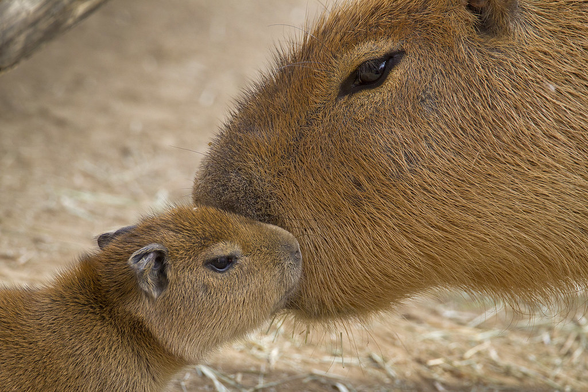
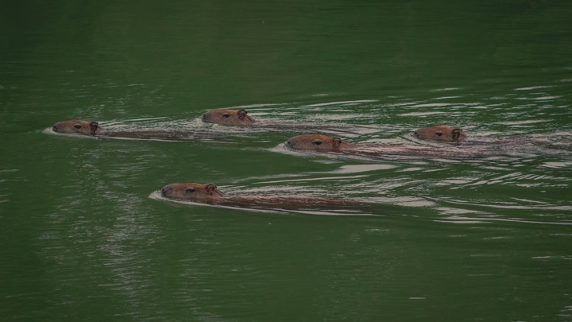
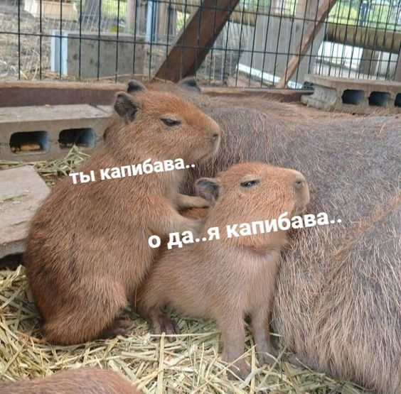
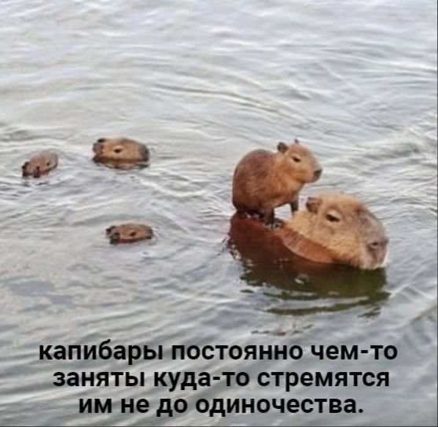
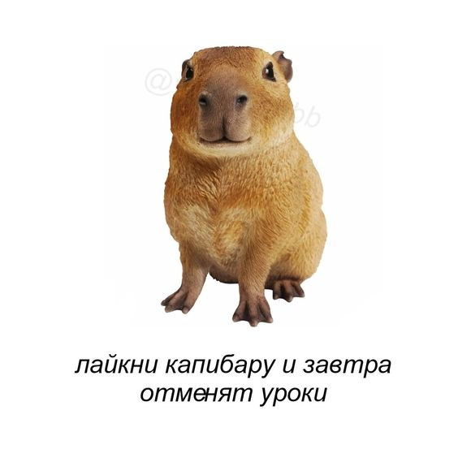
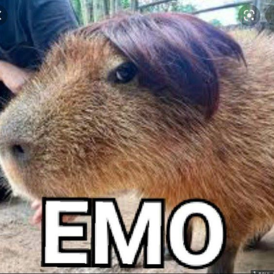
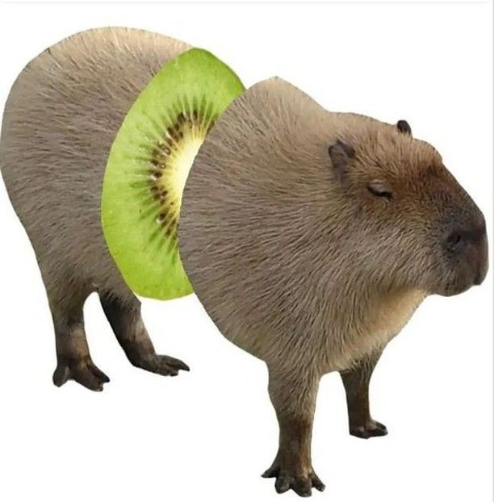
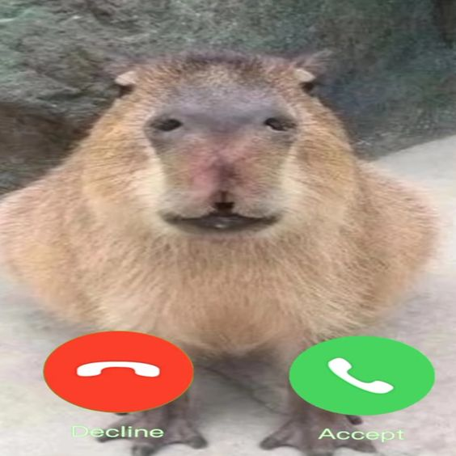

Капибар по-другому называют водосвинками,
потому что это полуводные животные, напоминающее огромных морских свинок.
Капибара — самый большой из ныне живущих грызунов,
вес ее может достигать 80 кг, а длина — 130 см.
Как бы устрашающе это ни звучало, обычно водосвинки — застенчивые и ручные существа.
Они встречаются возле болот и водоемов и считаются отличными пловцами.
Глаза и уши капибары расположены высоко на голове,
поэтому они могут легко видеть и слышать во время купания.
У капибар есть перепонки между пальцами задних и передних лап,
которые помогают им грести. Испугавшись,
эти грызуны могут оставаться под водой в течение нескольких минут.

Капибары — социальные животные, которые собираются в группы по 10–20 и больше особей.
В группе лидирует доминантный самец, которому подчиняются остальные самцы.
В случае неподчинения вожак может изгнать особь из группы.
Такая семья занимает территорию до 10 га, которая помечена секретом лидера.
Члены группы общаются свистом, лающими и щелкающими звуками.
Это спокойные, добродушные животные, у которых в природе есть враги.
На суше они становятся жертвами ягуаров, пум, если не успеют скрыться в воде.
Капибары могут нырнуть и находиться под водой до 5 минут.
Но в воде их тоже подстерегает опасность: на животных охотятся анаконды и кайманы.
Детеныши капибар могут попасть в лапы хищных птиц или одичалых собак.
Капибары живут в дикой природе, но хорошо приспосабливаются к существованию на освоенной человеком территории.
Главное, чтобы было пастбище и источник воды. Иногда при этом они становятся вредителями огородов.
Эти животные по природе добродушны, у них дружелюбный нрав.
Они легко идут на контакт и неравнодушны к ласке.
В Южной Америке капибары часто живут рядом с людьми и становятся домашними питомцами.
Кандидат социологических наук Ирина Ивлева относит их, наряду с другими домашними любимцами, к живым антидепрессантам.
  
 
